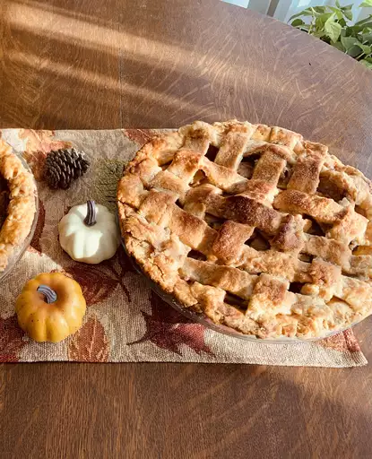

<!DOCTYPE html>
<html lang="EN">
    <head>
        <meta charset="UTF-8">
        <title>"Apple Pie"</title>
    </head>
</html>
<body><h1>Apple Pie Recipe</h1>
      <h3>Apple Pie by Grandma Ople</h3>
      <div>
        
      </div>

      <h4><em>*This was my grandmother's apple pie recipe. I have never seen another one quite like it. 
        It will always be my favorite and has won me several first place prizes in local competitions. 
        I hope it becomes one of your favorites as well! Serve hot or cold at family dinners or during the holidays, 
        topped with whipped cream or ice cream, or alongside a slice of Cheddar cheese.</em></h4>

        <h3>"Time to cook"</h3>
                           
        <h4>Prep: <em>30 mins</em> | Cook: <em>1 hr</em> | Total: <em>1 hr 30 mins </em> | Servings: <em>8</em> | Yield: <em>1 9-inch pie</em></h4>

        <div>
            <h3>"Ingredients"</h3>
            <ul>
                <li><h4>8 small Granny Smith apples, or as needed</h4></li>
                <li><h4>½ cup unsalted butter</h4></li>
                <li><h4>3 tablespoons all-purpose flour</h4></li>
                <li><h4>½ cup white sugar</h4></li>
                <li><h4>½ cup packed brown sugar</h4></li>
                <li><h4>¼ cup water</h4></li>
                <li><h4>1 (9 inch) double-crust pie pastry, thawed</h4></li>
            </ul>
            <h3>"Directions"</h3>
            <ol>
                <li><h4>Peel and core apples, then thinly slice. Set aside. </h4></li>
                <li><h4>Preheat the oven to 425 degrees F (220 degrees C). </h4></li>
                <li><h4>Melt butter in a saucepan over medium heat. Add flour and stir to form a paste; cook until fragrant, about 1 to 2 minutes. Add bothn sugars and water; bring to a boil. Reduce the heat to low and simmer for 3 to 5 minutes. Remove from the heat. </h4></li>
                <li><h4>Press one pastry into the bottom and up the sides of a 9-inch pie pan. Roll out remaining pastry so it will overhang the pie by about 1/2 inch. Cut pastry into eight 1-inch strips. </h4></li>
                <li><h4>Place sliced apples in the bottom crust, forming a slight mound. </h4></li>
                <li><h4>Lay four strips vertically and evenly spaced over top of the filled pie, using longer strips in the center and shorter strips at the edges. </h4></li>
                <li><h4>Fold the first and third strips all the way back so they're almost falling off the pie. Lay one of the unused strips perpendicular over the second and forth strips, then unfold the first and third strips back into their original position. </h4></li>
                <li><h4>Fold the second and forth vertical strips back. Lay one of the three unused strips perpendicular over top. Unfold the first and third strips back into their original position. </h4></li>
                <li><h4>Repeat Steps 7 and 8 to weave in the last two strips of pastry. Fold and trim excess dough at the edges as necessary, and pinch to secure. </h4></li>
                <li><h4>Slowly and gently pour the sugar-butter mixture over the crust, making sure it seeps down through the lattice and over the sliced apples. Brush some over the top of the lattice, but make sure it doesn't run off the sides. </h4></li>
                <li><h4>Bake in the preheated oven for 15 minutes. Reduce the temperature to 350 degrees F (175 degrees C) and continue baking until apples are soft, 35 to 45 minutes. </h4></li>
            </ol>


</body>
</html>


